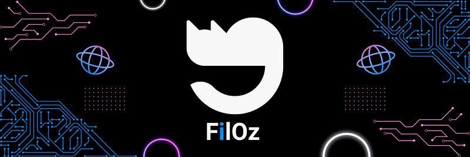
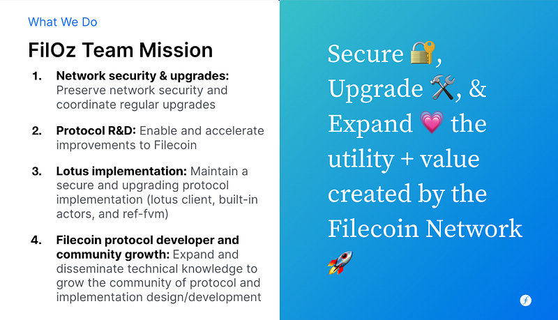
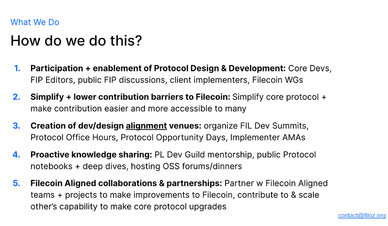
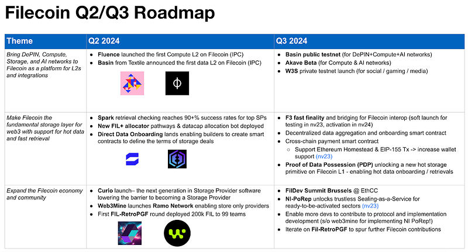
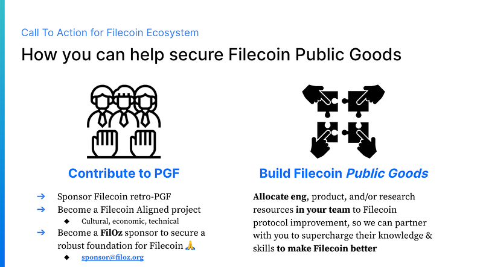

FilOz Blog
Introducing FilOz & Our 2024 Priorities

Molly Mackinlay (@momack2) · Follow & Jennifer Wang (@jennijuju) · Follow — 🌏 Read in Chinese
June 4th, 2024
Introducing FilOz, a new public goods design and development team in the Filecoin ecosystem! The FilOz team is dedicated to securing, upgrading, and expanding the Filecoin protocol and network with many other Filecoin-aligned teams. With just two months since our inception, we’re excited to share our mission, priorities, and the collaborative spirit driving us forward.
About Filecoin
What We Do
Filecoin 2024 Priorities
FilOz 2024 Priorities
How to Engage with Us
Funding FilOz
What’s Next
About Filecoin
Filecoin is a distributed storage network with a mission to create a robust, decentralized, and efficient foundation for humanity’s information. Over the past four years, Filecoin has built the largest decentralized storage network in the world, successfully onboarded nearly 2 exabytes of customer data, and grown a massive community of builders, storage providers, and client services. The ecosystem today boasts a rich array of tools, such as web3.storage, Lighthouse, and Banyan, supported by a network of 💙public goods teams contributing to Filecoin OSS development. These teams develop, maintain, and collaborate on improvements to critical codebases, tools, and areas of growth for the Filecoin network.
What We Do
At FilOz, our mission is to secure, upgrade, and expand the utility and value created by the Filecoin network. We focus on shipping high-leverage protocol improvements, supporting network upgrades, maintaining critical open-source software like the Lotus client, and designing new protocol enhancements through Filecoin Improvement Proposals (FIPs). Our goal is to drive innovation, growth, and collaboration within the Filecoin community and make Filecoin better together.
As a team of 14 protocol researchers, engineers, TPMs, and community engineers (many who have been involved in the Filecoin community for 4+ years!) — we have a strong commitment to the Filecoin network and to OSS development! Fun fact: the “OZ” in FilOz alludes to our commitment to OpenSource development and to our obsessive love of our team cats! 😻
As a Filecoin public goods protocol development team, our primary activities include:
- Network Security & Upgrades: Preserving network security and coordinating regular upgrades.
- Protocol R&D: Enabling and accelerating improvements to Filecoin.
- Lotus Implementation: Maintaining a secure and upgrading protocol implementation (Lotus client, built-in actors, and ref-fvm).
- Community Growth: Expanding and disseminating technical knowledge to grow the community of protocol and implementation design/development.

We achieve these goals by actively supporting protocol design and development, lowering the contribution barrier to core protocol/client implementations, helping organize events like FIL Dev Summits, and engaging in proactive knowledge sharing to grow new contributors.
We do our work in deep partnership with many other public goods teams across the Filecoin ecosystem — from Curio Storage to Web3mine to Fil-Ponto to Lighthouse and many others — and aim to prioritize our time and resources to augment (and incentivize!) the contribution of others towards improving the Filecoin network. We are a small team and we look forward to joint effort with YOU to make Filecoin better.

Filecoin 2024 Priorities
As discussed in the 2023 wrap up, Filecoin’s trajectory in 2024 includes 4 main opportunities:
- Bringing DePIN, Compute, Storage, and AI networks to Filecoin through L2s and deep integrations 💪
- Making Filecoin the fundamental storage layer for web3 🚀
- Upgrading Filecoin with support for hot data and fast retrievals 🔥
- Expanding the Filecoin economy and community 🤝
In just the past quarter — the Filecoin ecosystem has already made huge strides against each pillar.
- Bringing DePIN, Compute, Storage, and AI networks to Filecoin through L2s and deep integrations
Fluence launched as the first Filecoin compute L2 in March, and Basin recently announced its plans to be the first data L2 — helping onboard DePIN, compute, and AI networks onto Filecoin storage! Other compute & storage L2s in the works include Storacha, Akave, Lilypad, CoopHive, and more.
The new F3 fast finality system brings much deeper cross-chain interop to the Filecoin ecosystem, allowing other networks to seamlessly bridge and harness Filecoin storage proofs in real time using Axelar or other trustless bridging solutions. F3 is on track towards soft launch in Q3 and full activation in Oct/Nov.
2. Making Filecoin the fundamental storage layer for web3
Solana announced its integration with Filecoin storage in Q1, and many more web3 networks are turning to Filecoin for robust, long-term, decentralized storage thanks to onramps like Basin (DePIN), Akave (Compute), web3.storage (social, media, & gaming), Lighthouse (permanent storage), and many others!
F3 will also unlock trustless integration pathways for any EVM-compatible network to integrate fully programmable storage and backup of their chainstate using Filecoin. They can even pay in their own ERC20 token, which is swapped to pay for long-term storage in FIL! A prototype data onramp using Filecoin bridges is creating exemplar building blocks for cross-chain Filecoin storage applications to reuse and experiment with by the end of June.
3. Upgrading Filecoin with support for hot data and fast retrievals
Thanks to the Spark retrieval checker — Fil+ Storage Providers have continued improving real-time data retrievability — with the top 5 SPs all now achieving over 90% retrieval success rates!
Filecoin L2 data onramps like Basin, Akave, and Storacha are all focused on the key pain point of hot, fast storage on Filecoin — offering efficient caching, aggregation, and developer interfaces for web3 clients. All 3 of these networks are targeting Q3 testnets — unlocking even hotter storage interfaces for users!
Hot storage is also coming to Filecoin L1 via a new proof type — Proof of Data Possession (PDP) — which offers a lightweight data accessibility proof without the need for sealing and unsealing sectors. This creates space for a new class of storage providers focused on providing hot storage and retrievals, able to serve storage onramps like Basin, Akave, Storacha and others the fast retrievals their users need!
The plan is to experiment with the new PDP SP interface (as lightweight as possible) in smart contracts first to understand how onramps will leverage PDP for paid services and L2 incentives and then solidify as a FIP in Q3.
4. Expanding the Filecoin economy and community
The Filecoin economy continues growing on FVM. In Q1 — new DEXs like SushiSwap and Uniswap came to Filecoin L1 via Oku trade — bringing increased cross-chain swaps, while FIL leasing platforms like Glif reached new all-time high participation rates.
Thanks to recent upgrades, it’s now cheaper than ever to become a Filecoin storage provider. New Sealing-as-a-Service providers like Ramo (Web3Mine) allow any laptop to join the Filecoin network, while proof types like NI-PoRep and PDP are massively lowering the cost of adding capacity and data to Filecoin. New SP software like Curio and customized proving schedules also reduce the human overhead and complexity of operating a storage provider.
The many improvements to storage onramps, retrieval SLAs, and Filecoins demonstrated storage robustness have started attracting large-scale paying storage customers to Filecoin. FilStor is actively supporting and routing paying enterprise customers to the optimal storage onramp — accelerating paid data storage on Filecoin!

FilOz 2024 Priorities
In the past 2 months, FilOz has been hard at work contributing to each Filecoin 2024 pillar as part of our public goods design and implementation work. Some of the projects we’re most excited about:
- 🚀 FilOz is one of the main teams implementing F3 and also prototyping smart contract templates to support efficient cross-chain storage onramp via FVM smart contracts and bridges.
- 💪 FilOz has proposed an architecture for a fully decentralized data L2 on Filecoin — and is partnering closely with Basin, Storacha, and Akave to ensure their data L2s integrate with Filecoin L1 smoothly (including for payments!) Join #data-onramp if you want to collaborate!
- 💪 FilOz has landed > 5 ETH API bug fix/improvements in lotus and will continue to collaborate with the Fil Builders team to reduce tech debts to unblock critical ecosystem integrations & partnerships.
- 🔥 FilOz authored and implemented a FIP for supporting Ethereum legacy tx type to unlock more compatibility with EVM-based tools, the FIP is on track for shipping in the upcoming network upgrade.
- 🔥 FilOz created the initial design for Proof of Data Possession (PDP) — and is working with the L1 and L2 community to refine the design to deliver maximum value to the Filecoin ecosystem.
- 🤝 FilOz is supporting other teams with design work, FIP co-authorship, and code reviews on new protocol upgrades like NI-PoRep & introduction of Sealer ID — as well as helping TPM the network v23 upgrade across all three client implementations — lotus, forest, and venus, as well as the FF governance team and ecosystem stakeholders.
- 🤝 FilOz will be working with other implementers like Forest teams, to streamline and optimize protocol development and testing so to deliver features to network users faster yet safely.
- 🤝 FilOz also hosted 3 Protocol Days (Aggregators, Filecoin Economy & Data Onramp), network upgrade AMAs, and we plan to host many more. Subscribe here for upcoming events!! We are also participating as track leads and organizers for the next FIL Dev Summit (FDS-4) in Brussels!
- 🤝 FilOz is upgrading the lotus release process so that users can get enhancements & bug fixes more regularly, and the contribution process to make it easier for any OSS developer to contribute to Filecoin improvement and custodianship.
- 🤝 FilOz also plans to look into opportunities that enhance the economic breadth of Filecoin — such as new storage onboarding fees, QAP design, baseline pledge updates, and much more.
As we look ahead to 2024, FilOz has identified five main priority areas for our team to contribute to making Filecoin better and stronger:
- Accelerate Storage Adoption: We aim to create more onramps and better storage primitives, making Filecoin more accessible and useful for a broader range of users.
- Enhance Filecoin Utility with Cross-chain Interop: By strengthening cross-chain bridges and proofs, we will enable other blockchains to utilize Filecoin as their storage layer.
- Simplify and Lower Maintenance Effort: Reducing maintenance efforts will allow us to focus more on breakthroughs and new developments upon a stable and robust platform.
- Grow and Align the Filecoin Community: Sharing knowledge, context, and priorities across teams will help us build a more cohesive, informed, and capable community of core Filecoin builders and contributors.
- Expand the Filecoin Economy: By reducing network OpEx costs, creating more channels for paying storage demand, and identifying more avenues to put FIL to work in the network, we aim to support the economic health of the Filecoin network.
As with all our work, FilOz aims to enhance and accelerate the work of others — so our 2024 goals prioritize areas where we can best unblock and collaborate with other teams building on and with Filecoin. Our work so far has us partnering closely with:
- Onboarding ramps like Basin, Lighthouse, Banyan, CID.Gravity, and Storacha to design reusable L1 primitives and smart contract templates that can accelerate data-L2s to grow Filecoin storage adoption.
- FVM bridging projects like IPC, Axelar, Eastor, and others to implement F3 and unlock cross-chain interoperability for storage deals and proofs across many web3 chains.
- Other core protocol dev teams like Curio Storage, ChainSafe (Forest and Infra), IPFSForce (Venus), and others to improve protocol maintainability and simplification — meaning we spend less time on manual testing, maintaining, and releasing new Filecoin improvements!
- Teams like FF, Ansa Research, CEL and others to co-host the next FDS in Brussels and future ones, participate in the first retro-PGF, and grow the FIP author community.
- Dev and design teams like Ramo Network, Elliptic Research, and FilStor to bring cost savings to Storage Providers and help accelerate the growth of paid storage deals.
If you align with these areas of focus in the Filecoin community — we’d love to partner with you to make them a reality! Get involved by:
- Joining Filecoin Slack and find us in:
- #fil-protocol to brainstorm and design protocol improvements for/with Filecoin.
- #fil-lotus-dev to implement Filecoin improvements w/ us!
- Participate in or host a Protocol Office Day (deep-dive, Office Hour, or AMA)
- Subscribe to upcoming events here
- Book office hours with our team members; click the 📅 links!
- Send collaboration or protocol office ideas to po@filoz.org.
- Join us for deep protocol discussions and workshops at FDS in Brussels.
- Follow us on Twitter for the latest updates @_FilOz.
How to Engage with Us
Our partnerships and collaborations with Filecoin-aligned teams amplify our impact. As a small team of senior protocol devs and designers, our energy is best spent by joining forces with others and helping them land valuable improvements to Filecoin through working groups, collaborations, and design partnerships. Engage with us by dedicating time and resources to make Filecoin better — and harnessing our team’s expertise to support on design advice, FIP co-authorship, or code reviews to unblock the enhancements you bring to Filecoin.
We invite you to join us in our mission to improve the Filecoin network. Here’s how:
- Contribute to Public Goods Funding: Participate in public goods funding or development.
- Build Filecoin Public Goods: Develop tools and services that benefit the Filecoin ecosystem.
- Sponsor Filecoin retro-PGF: Provide financial support for retroactive public goods funding in the Filecoin ecosystem.
- Become a Filecoin-Aligned Project: Align your project with Filecoin’s cultural, economic, and technical goals.
- Join Us: Dedicate engineering, product, and research resources to Filecoin protocol improvement.
Let’s work together to make Filecoin better! For more information or to get involved, contact us at contact@filoz.org.
Funding FilOz
FilOz has a generous starting grant from the Protocol Labs Filecoin Public Goods Fund to secure base funding for a small team for three years. Our goal is to achieve future growth and sustainability through public goods funding from Filecoin-aligned teams and sponsors, retro-PGF, project airdrops, and dedicated mission-aligned sponsorships.
We aim to build a long-term endowment to secure maintenance and set the standard for other public goods teams in the Filecoin network. We’d love your support to build public goods for Filecoin and contribute to this critical public infrastructure!
💙If you’d like to become a FilOz sponsor, please reach out at sponsor@filoz.org.

What’s Next
At FilOz, we are committed to enhancing the Filecoin network through collaboration, innovation, and our shared vision for a decentralized foundation for humanity’s most important information. Our 2024 priorities reflect our dedication to accelerating storage adoption, enhancing cross-chain interoperability, simplifying maintenance, and expanding the Filecoin economy & community. Together, we can unlock new possibilities and drive the Filecoin mission forward.
Let’s Make Filecoin Better Together! 🚀